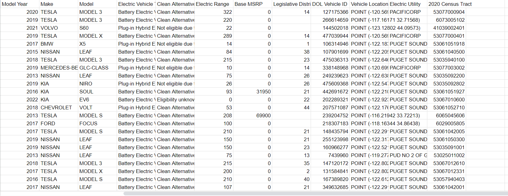

The hyperlink above, will take you to the module PDF document addressing, the thoughts and what i learned from each module.
Bellow, we will have another link to the Data i have used to Make my hypotheses as well as, questions i had. A lot of my questions, and so on will be below or above the link to the google spreadsheet.
As reading through this data, I've wondered to my self how in the world did this company even get such data. Is it still accurate? Is there a risk for this data to be out there to the world, especially the vechile location and vechile VIN being addressed in this set data. What is the range of each car? What kind of information can we get from this data.
